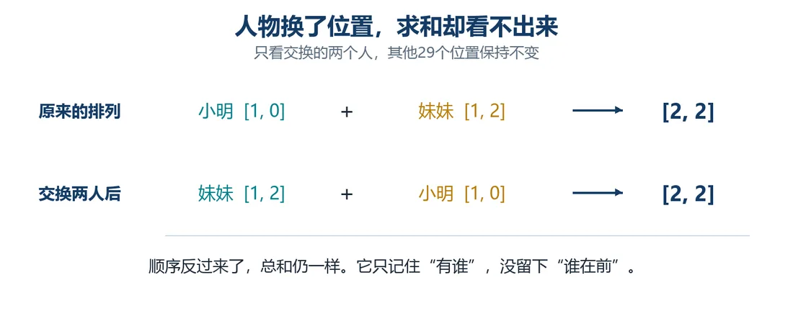

我们在这儿
前两篇我们把长句拆成 31 个 Token，去重后词表有 27 个，也给它们配了起始向量。句中每个位置按编号取数、分别保存，电脑里有了 31 行能算的数字。
可起始向量只跟 Token 有关。比如“我爱你”和“你爱我”，同一个“我”站在句首还是句尾，查到的都一样，两句话的意思却反了。
这一篇琢磨怎么让“站在哪儿”也参与计算。
这一篇要解决加入位置信息，让同一个 Token 站在不同位置时数字不一样。
大概阅读约 7–9 分钟
只把第 3 处“小明”和第 20 处“妹妹”对调，其他 Token 不动。
借书的部分，就从“小明把书借给妹妹”变成“妹妹把书借给小明”。借出的人和收书的人，反过来了。
按上一篇的约定，起始向量只跟 Token 有关。所以两句话里“小明”查到的都是 [1, 0]，“妹妹”都是 [1, 2]。人换了位置，数字却没变。
把这些向量加起来也解决不了，因为 a+b＝b+a，只看总和看不出谁在前谁在后。就像只报“这屋里有小明、有妹妹”，没说谁坐主位。那就试试给每个位置也配一组数，再跟起始向量合起来。

起始向量有两格，位置也用两格。
先给第 3 处配 [0, 0]，第 20 处配 [0, 1]，用这两组简单的数，看能不能把两个位置区分开。
这里先用最简单的教学位置向量，目的是让位置能参与计算；它不是论文里的正弦余弦位置编码。
最直白的办法，是把两组数接起来：两份都留下，可两格变成四格。后面每步都得多处理两格，计算量大增。
能不能先不增加格数？
试试把对应数字相加：仍是两格，两组数都参加了计算。可只看相加结果，不一定能把原来两组分别拆回来，因为 a+b＝c 简单，反过来由 c 推 a 和 b 很难。
拼接还是相加，先沿相加这条路走，拿结果看管不管用。
位置数字像座位牌，留在座位上。
人换了座位，总不能还抱着原来的座位牌。
以“妹妹”为例，她的起始向量仍是 [1, 2]。
人还是那个人，这次坐哪儿，数字里终于有了区别。
给每个位置配一组数、让位置也能参与计算，这个办法叫位置编码。把 31 个位置的向量按位置号排成表，记作 P。下面点一点，跟着三步把一个位置的数算出来。
31 处都照这三步算一遍，按顺序排好，新矩阵记作 X，有 n 行、d 列。到这里还不能说电脑读懂了“谁把书借给谁”，但至少“这次站在哪儿”这个消息，有办法送进计算了。
这一篇收个尾
这一篇拿到：加入位置后的 X，同一个 Token 在不同位置会有不同数字。
下一篇接着看：让周围 Token 的变化也能传过来。